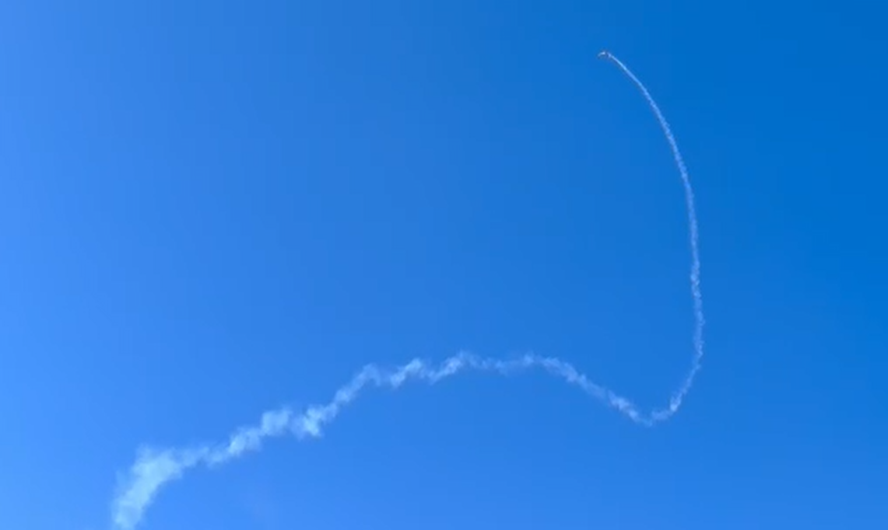
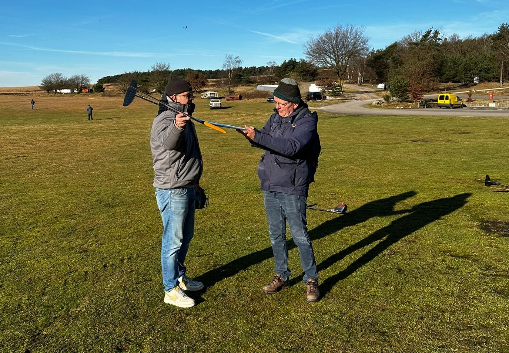

DLG clinic

Op een fantastische mooie (thermiek technische) dag eind januari hebben een aantal leden van de Arnhemse Luchtvaart Club een clinic DLG vliegen bijgewoond op Terlet vliegveld. De organisatie en piloten van F3K Nederland (www.fk3.nl) hebben deze clinic verzorgd. Wat is F3K / DLG? Zie de F3K Nederland website voor een goede uitleg (link).
We zijn ontvangen in het restaurant ‘De Thermiek bel’ op het terrein van Terlet. Na een korte briefing onder het genot van een lekker bakje koffie, direct weer naar buiten om de daad bij het woord te voegen.
Natuurlijk na wat kennis maken en wat vragen gesteld te hebben over het wel en wee van DLG vliegen werd “Het werpen” onder de loep genomen. Duidelijk werd aangegeven hoe de DLG’s geworpen kunnen worden en waarom. Natuurlijk ziet het er erg eenvoudig uit omdat ervaring een grote rol herin speelt maar elke beginner kan al snel zijn DLG goed airborne krijgen. Piloten van F3K Nederland en clinic deelnemers brengen het geleerde in de praktijk. Er wordt veel gevlogen met DLG’s vervaardigd uit carbon met spanwijdte van 1.5m. Mooie kistjes die zeer rustig vliegen. Eén kistje is echter vervaardigd uit balsahout met één rechte staartstok van carbon. Deze ‘CX-Fling’ is te verkrijgen als bouwkit bij aviationtoys.nl met of zonder servo’s. Sterk genoeg om mee te leren DLG vliegen. Als demo is er zelfs een raketje onder gemonteerd waardoor de CX-Fling met hoge snelheid werd gelanceerd. Zie filmpje.
Bij DLG vliegen is, net als bij alle andere vormen van zweefvliegen, van belang dat je wat van thermieken af weet. Zo ook bij deze clinic is daar duidelijk uitleg over gegeven. Het ontstaan van een thermiek, hoe je deze opspoort, hoe ‘de natuur’ verraadt waar een thermiek kan zijn. Reuze interessant en er is genoeg van op het internet terug te vinden over thermiek theorieën. Zoek maar eens met Google naar Joe Wurts en / of Phillip Kolb thermal soaring. Mark Drela weet veel van het bouwen van gliders / air foils.
Al met al, veel geleerd en een zeer vermakelijke dag onder het zonnetje op Terlet.

